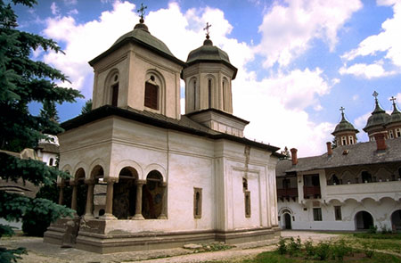
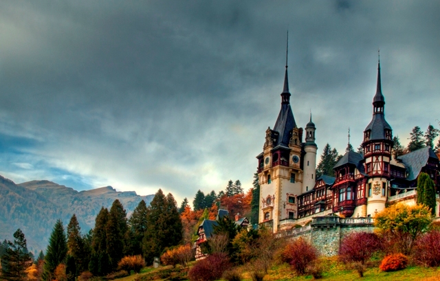
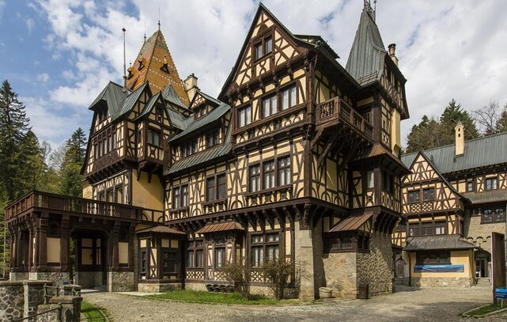
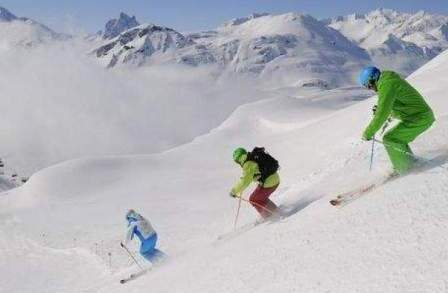
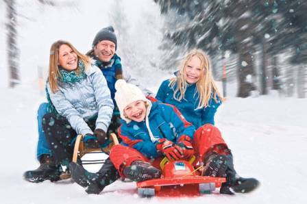
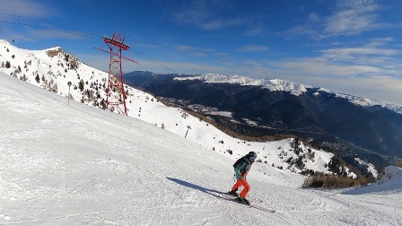
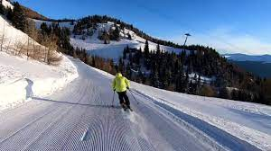
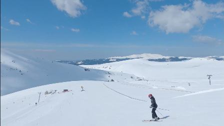
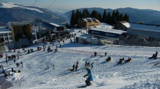

Despre orașul Sinaia
Stațiunea Sinaia este situată la o altitudine cuprinsă între 798 și 1055m, pe versantul sud-estic al Masivului Bucegi, de-a lungul văii Prahova . Poalele împădurite ale munților Furnica, Zgarbură, Colții lui Barbes și Culmea Izvorului încadrează stațiunea într-o frumoasă scena verde.
Scurt istoric al orașului Sinaia
Zona în care se află azi orașul Sinaia era nelocuită în secolul al XVII-lea, primii locuitori care s-au stabilit în pădurea virgină de aici, aflată la poalele Bucegilor, fiind călugării mănăstirii Sinaia, ctitorită între 1690-1695 de către marele spătar Mihai Cantacuzino.
Castelul Peleș este unul dintre cele mai cunoscute obiective turistice din România. Acesta a fost construit la inițiativa primului Rege al României, Carol I.
Peleș este considerat unul dintre cele mai frumoase edificii de tip istoric din România.
SINAIA
Stațiune montană
Sinaia – trasee montante din Sinaia, locuri de vizitat și obiective turistice.
Obiective turistice in Sinaia:
- Manastirea Sinaia este inca o manastire activa, de calugari, cu cladiri datand din 1695;
- Palatul Peles este unul din cele mai bine conservate palate regale din Europa. El a servit ca resedinta de vara pentru primul rege Hohenzollern al Romaniei, Carol I. Construit in a doua jumatate a secolului al XIX-lea, cladirea este incercarea regelui de a imita stilul din tara lui natala, creand un ansamblu bavarian in muntii din Romania. Palatul este bogat ornamentat atat in interior, cat si in exterior, cu complicate sculpturi in lemn si picturi reprezentand scene din operele lui Wagner;
- Pelisor este situat chiar langa Palatul Peles si a fost resedinta de vara a celui de-al doilea rege din dinastia Hohenzollern, Ferdinand. Nu la fel de mare ca Palatul Peles, Pelisor ofera mai mult confort.

Mănăstirea Sinaia

Castelul Peleș

Pelișor
Sporturi de iarna - un secol de istorie
Sigur știi că Sinaia e considerată cea mai frumoasă și mai elegantă stațiune de iarnă din România.
Domeniul schiabil existent este repartizat pe doi dintre versantii muntelui Varful cu Dor (2030 m):- Versantul de Vest - echipat cu telescaunul Valea Dorului, completat de teleschiuri.
- Versantul de Est - (care domina Sinaia) se intinde de-a lungul liniei telecabinei.

Sport de iarna-schiat

Sport de iarnă- săniuș
Pârtii de schi în stațiunea montană Sinaia
- Pârtia Gondola - dificultate: ușoară, lungime: 150 metri, lățime medie: 40 metri, diferență de altitudine: 20 metri;
- Pârtia Carp - dificultate: dificilă, lungime: 1382 metri, lățime medie: 50 metri, diferență de altitudine: 450 metri;
- Pârtia Drumul de Vară - dificultate: medie, lungime: 2972 metri, lățime medie: 50 metri, diferență de altitudine: 395 metri;
- Pârtia Valea Soarelui - dificultate: medie, lungime: 1191 metri, lățime medie: 103 metri, diferență de altitudine: 214 metri;
- Pârtia Valea Soarelui 2 - dificultate: ușoară, lungime: 1200 metri, lățime medie: 50 metri, diferență de altitudine: 20 metri.

Pârtia Carp

Pârtia drumul de vară

Pârtia valea soarelui

Pârtia Gondola